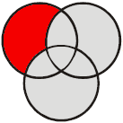

| Follow | |
|---|---|
| moc.liamg@nivuac.nairolf | |
| notevenodd.net | |
| github | |
| juggling | @jugglerflo, |
| misc. |
Hi, I'm Florian.
I created the Not Even Odd website (sometimes abbreviated as "NEO") to share a few things I find beautiful. The main topics which I plan to cover on this site are:
- Free Software
powerful and ethical computing with no digital handcuffs.
- Personal productivity and minimalism, the practice to cut through the mundane and do tasks with minimal friction, so you can focus on what matters.
- Mathematics and Physics
- Juggling.
Juggling may be one of the most-pointless thing in the world, yet one of the coolest. On this site, I shall especially emphasize the theoretical aspect of juggling.
- Gerontology and life sciences applied to life extension and Longevity.
live long and prosper!
- and more...
Last 10 Posts:
Building this Website (8. feed)Free SoftwareBuilding this Website (7. plugins)Building this Website (6. external files)Building this Website (5. tiddlers' date)Building this Website (4. tags)Building this Website (3. navigation)Building this Website (2. template)Building this Website (1. content selection)Building this Website
...
Tags
see all tags All Posts
(alphabetically | chronologically)
Pages tagged as
:
- 404
- All Posts (Alphabetical Order)
- All Posts (Chronological Order)
- All Tags
- Building this Website (8. feed)
- Building this Website
- Building this Website (1. content selection)
- Building this Website (2. template)
- Building this Website (3. navigation)
- Building this Website (4. tags)
- Building this Website (5. tiddlers' date)
- Building this Website (6. external files)
- Building this Website (7. plugins)
- Last Posts